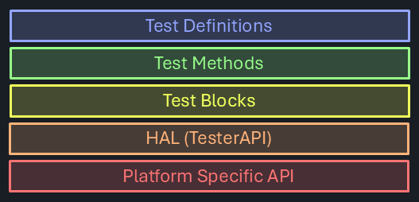
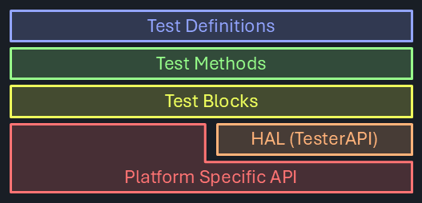

Test Abstraction
For very simple devices decades ago, implementing the test solution entirely with custom code programming hardware level directly was a reasonable approach. It provided good performance in a resource constrained environment at acceptable efforts.
That model doesn't scale - certainly not at the rate of how device complexity increases. Test solutions have become massive, and the effort to implement them is hardly manageable without a revised approach.
Modular concepts and code reuse can significantly reduce the overall effort, but requires the introduction of abstraction layers in a test solution stack-up.
Test Solution Stack-Up

Platform Specific API
At the lowest level, the native programming interface of the tester hardware is located. It is typically very specific to a tester model, but allows accessing all features and unlocking inherent performance. It may not be easy to use or intuitive, and while test code directly using that may achieve great performance, but can be hard to create and maintain.
Specifically when platform independence is desired, inserting a hardware abstraction layer can be helpful. It would translate hardware specific calls into a generic interface that is available on multiple platforms.

More flexibility is possible when the hardware abstraction layer is not exclusively used - allowing access to unique architectural features for best performance, but utilizing the HAL in areas where that makes sense. 
Test Blocks ("Tester Architecture Abstraction")
The next level of abstraction is achieved by grouping hardware calls into higher level language constructs covering functional tester areas that are often used together. This can simplify common tasks on a specific tester, and also encapsulate a possibly beneficial execution order optimized for the intended use case.
Block abstraction allows for concise test code, with a focus on listing the logical steps required to perform a basic continuity test:
using static Demo.TestLib;
[TestMethod]
public void SimpleContinuity(string digPins, string powerPins, double forceCurrent) {
// setup
string allPins = Utils.MergePinLists(digPins, powerPins);
Connect(allPins);
Setup.ForceV(powerPins, 0 * V);
Setup.ForceI(digPins, forceCurrent, Measure.Voltage, 2 * V, forceCurrent);
Setup.Gate(allPins, true);
// measure
TheHdw.Wait(1 * ms);
PinSite<double> meas = Acquire.ReadMeter(digPins);
// reset
Setup.Gate(allPins, false);
DisConnect(allPins);
// datalog
Datalog.TestParametric(meas, "V");
}
Note
Note how the sequence of steps performed is highly visible with self-explaining syntax highlighting the intention (Connect, Setup, Acquire, Datalog, ...). The implementation is buried within these functions, which the user can see, step through or modify (copy & customize) if needed.
Tip
The PublicAPI call TheHdw.Wait(1 * ms); did not slip in by accident. If a call to wherever is suitable for the intended abstraction level, and it's purpose & functionality is apparent, there's nothing wrong with that.
Test Methods ("Test Technique Abstraction")
This level covers the implementations of test concepts, specific to certain device features or functional blocks. Test methods can be parameterized, but a tradeoff needs to be found between generic (many parameters, complicated, overhead) and specific (barely reusable, requires many of them, hard to maintain).
Test Methods should clearly reflect the high level information flow and functional logic of a test technique implementation. It's the level at which device and tester actions are engaged without going into the last technical detail. By covering the "how", the "what" becomes visible and comprehensible, for the code authors, the maintainers and the production engineers chasing yield problems.
To achieve that, the code needs to be brief, self explaining and provide a good overview of how a pass / fail decision is being made. A constant abstraction level is maintained, and jumps between high-level and detailed hardware calls is avoided.
Test Definitions ("Test Implementation Abstraction")
At the top level, test specifications defines what has to be tested, how that needs to be done, the consecutive order to execute and what to do with devices based on the results. If done formally, that information may be used by a program generator to automatically create, instruct or use the components underneath.
Ideally, test definitions don't contain any tester / platform dependence. They are generic and free from tester specific terminology.